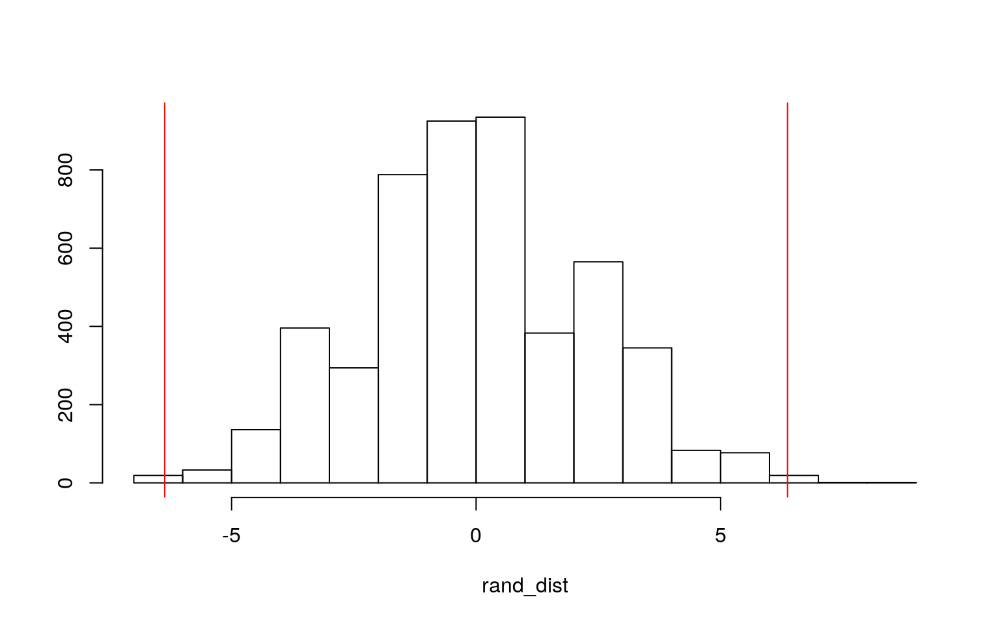
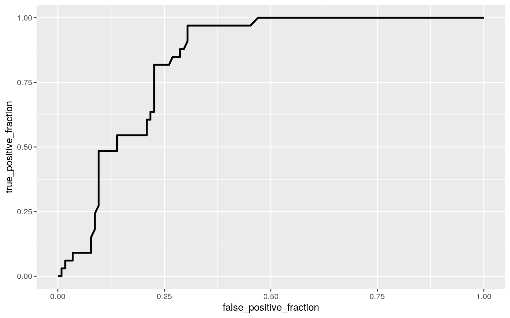

For review, League of Legends(LoL) is a team based multiplayer online battle arena game where two teams of 5 battle to see who destroys the base first. There are 5 positions corresponding to the 3 map lanes: Top, Mid, Bot(Support and Attack Damage Carry or ADC), and Jungle(they roam). Often the characters(Champions) have specific classes that are associated with the position they are suited for.
From the previous project, I had briefly seen trends in the base stats of the League of Legends(LoL) base game. However, due to the main purpose of the previous project being to compare LoL to it’s spin off Team Fight Tactics, I decided to analyze the base stats of the original game in more detail. For this project, I have 148 observations(Champions/Characters) and 12 variables. Champion is the name of the game character. Class is the type of style the champion plays as. Some champions even have a sub type which is stated in Subclass. In order to use abilities, some Champions must “pay” a certain resource such as mana or blood in order to use it. The type of Resource a Champion uses is stated in ResourceType and the base amount of Resource “storage” is measured in ResourcePool. Armor and SpellBlock are defense against physical and magic damage respectively. The rest of the variables are self explanitory as they are true to their name.
This is just some tidying/editing I had to do to my raw data in order to get variables I thought might be relevant to what I want to analyze. I also ran any packages I thought I might need later.
LoL_Champions_RawData <- read_csv("LoL_Champions.csv")
LoL_Champions <- LoL_Champions_RawData %>% select(Champion=id, Class=tags, ResourceType=partype, Hp=stats.hp, ResourcePool=stats.mp, MovementSpeed=stats.movespeed, Armor=stats.armor, SpellBlock=stats.spellblock, Range=stats.attackrange, Damage=stats.attackdamage, AttackSpeed=stats.attackspeed)
LoL_Champions <- LoL_Champions %>% separate(Class, c("Class","Subclass"), ',')Once again, the main focus I want to look at is how base stats differ among classes. To test to see if at least one of the numeric stats differs by Class, I ran a MONOVA Test.
man1<-manova(cbind(Hp, MovementSpeed, Armor, SpellBlock, Range, Damage, AttackSpeed)~Class, data=LoL_Champions)
summary(man1)## Df Pillai approx F num Df den Df Pr(>F)
## Class 5 1.7302 10.583 35 700 < 2.2e-16 ***
## Residuals 142
## ---
## Signif. codes: 0 '***' 0.001 '**' 0.01 '*' 0.05 '.' 0.1
' ' 1Note: I did not include ResourcePool as based on my knowledge of the game RecourcePool is also determined by ResourceType while all the other stats are mostly determined by the Class.
Since the overall MANOVA was significant it means that at least one base stat differs among Classes. To see which differs, I ran univariate ANOVAS.
summary.aov(man1)## Response Hp :
## Df Sum Sq Mean Sq F value Pr(>F)
## Class 5 56470 11294.0 10.678 1.004e-08 ***
## Residuals 142 150195 1057.7
## ---
## Signif. codes: 0 '***' 0.001 '**' 0.01 '*' 0.05 '.' 0.1
' ' 1
##
## Response MovementSpeed :
## Df Sum Sq Mean Sq F value Pr(>F)
## Class 5 3715.5 743.10 23.165 < 2.2e-16 ***
## Residuals 142 4555.1 32.08
## ---
## Signif. codes: 0 '***' 0.001 '**' 0.01 '*' 0.05 '.' 0.1
' ' 1
##
## Response Armor :
## Df Sum Sq Mean Sq F value Pr(>F)
## Class 5 3876.0 775.19 41.801 < 2.2e-16 ***
## Residuals 142 2633.3 18.54
## ---
## Signif. codes: 0 '***' 0.001 '**' 0.01 '*' 0.05 '.' 0.1
' ' 1
##
## Response SpellBlock :
## Df Sum Sq Mean Sq F value Pr(>F)
## Class 5 140.72 28.144 17.192 2.808e-13 ***
## Residuals 142 232.45 1.637
## ---
## Signif. codes: 0 '***' 0.001 '**' 0.01 '*' 0.05 '.' 0.1
' ' 1
##
## Response Range :
## Df Sum Sq Mean Sq F value Pr(>F)
## Class 5 4694852 938970 135.48 < 2.2e-16 ***
## Residuals 142 984173 6931
## ---
## Signif. codes: 0 '***' 0.001 '**' 0.01 '*' 0.05 '.' 0.1
' ' 1
##
## Response Damage :
## Df Sum Sq Mean Sq F value Pr(>F)
## Class 5 3001.1 600.21 33.691 < 2.2e-16 ***
## Residuals 142 2529.8 17.82
## ---
## Signif. codes: 0 '***' 0.001 '**' 0.01 '*' 0.05 '.' 0.1
' ' 1
##
## Response AttackSpeed :
## Df Sum Sq Mean Sq F value Pr(>F)
## Class 5 0.022189 0.0044378 4.0269 0.001902 **
## Residuals 142 0.156492 0.0011021
## ---
## Signif. codes: 0 '***' 0.001 '**' 0.01 '*' 0.05 '.' 0.1
' ' 1After the ANOVA test, it appears that all stats have a significant difference across Class. In order to see which Classes differ for which stats, pairwise t-tests were performed. A total of 113 tests was done ( 1MANOVA, 7ANOVA, 105 T-tests).
pairwise.t.test(LoL_Champions$Hp, LoL_Champions$Class, p.adj="none")##
## Pairwise comparisons using t tests with pooled SD
##
## data: LoL_Champions$Hp and LoL_Champions$Class
##
## Assassin Fighter Mage Marksman Support
## Fighter 0.61445 - - - -
## Mage 6.7e-06 2.1e-07 - - -
## Marksman 0.00027 6.7e-05 0.41370 - -
## Support 0.00132 0.00085 0.42901 0.93460 -
## Tank 0.71026 0.93549 1.4e-05 0.00060 0.00279
##
## P value adjustment method: nonepairwise.t.test(LoL_Champions$MovementSpeed, LoL_Champions$Class, p.adj="none")##
## Pairwise comparisons using t tests with pooled SD
##
## data: LoL_Champions$MovementSpeed and
LoL_Champions$Class
##
## Assassin Fighter Mage Marksman Support
## Fighter 0.7601 - - - -
## Mage 2.4e-05 1.1e-08 - - -
## Marksman 1.6e-10 1.3e-15 0.0011 - -
## Support 7.2e-07 1.4e-09 0.0879 0.2753 -
## Tank 0.0307 0.0033 0.0425 3.4e-06 0.0014
##
## P value adjustment method: nonepairwise.t.test(LoL_Champions$Armor, LoL_Champions$Class, p.adj="none")##
## Pairwise comparisons using t tests with pooled SD
##
## data: LoL_Champions$Armor and LoL_Champions$Class
##
## Assassin Fighter Mage Marksman Support
## Fighter 0.00010 - - - -
## Mage 1.7e-07 < 2e-16 - - -
## Marksman 0.04348 4.4e-11 0.00021 - -
## Support 0.02570 0.22448 4.3e-13 1.7e-05 -
## Tank 2.8e-05 0.29479 < 2e-16 1.4e-10 0.05805
##
## P value adjustment method: nonepairwise.t.test(LoL_Champions$SpellBlock, LoL_Champions$Class, p.adj="none")##
## Pairwise comparisons using t tests with pooled SD
##
## data: LoL_Champions$SpellBlock and LoL_Champions$Class
##
## Assassin Fighter Mage Marksman Support
## Fighter 0.08480 - - - -
## Mage 9.6e-09 5.1e-08 - - -
## Marksman 9.3e-09 7.5e-08 0.67559 - -
## Support 4.4e-05 0.00113 0.27196 0.16816 -
## Tank 0.41713 0.39759 1.8e-07 1.6e-07 0.00046
##
## P value adjustment method: nonepairwise.t.test(LoL_Champions$Range, LoL_Champions$Class, p.adj="none")##
## Pairwise comparisons using t tests with pooled SD
##
## data: LoL_Champions$Range and LoL_Champions$Class
##
## Assassin Fighter Mage Marksman Support
## Fighter 0.23 - - - -
## Mage < 2e-16 < 2e-16 - - -
## Marksman < 2e-16 < 2e-16 0.54 - -
## Support 3.9e-12 < 2e-16 1.7e-05 5.7e-06 -
## Tank 0.15 0.63 < 2e-16 < 2e-16 2.3e-16
##
## P value adjustment method: nonepairwise.t.test(LoL_Champions$Damage, LoL_Champions$Class, p.adj="none")##
## Pairwise comparisons using t tests with pooled SD
##
## data: LoL_Champions$Damage and LoL_Champions$Class
##
## Assassin Fighter Mage Marksman Support
## Fighter 0.063 - - - -
## Mage 5.2e-10 < 2e-16 - - -
## Marksman 0.130 8.1e-05 5.3e-08 - -
## Support 7.5e-08 1.4e-14 0.984 6.0e-06 -
## Tank 0.777 0.103 1.1e-11 0.058 6.3e-09
##
## P value adjustment method: nonepairwise.t.test(LoL_Champions$AttackSpeed, LoL_Champions$Class, p.adj="none")##
## Pairwise comparisons using t tests with pooled SD
##
## data: LoL_Champions$AttackSpeed and LoL_Champions$Class
##
## Assassin Fighter Mage Marksman Support
## Fighter 0.4156 - - - -
## Mage 0.0151 0.0312 - - -
## Marksman 0.1863 0.4658 0.2337 - -
## Support 0.0633 0.1545 0.8054 0.4597 -
## Tank 0.2340 0.0213 9.7e-05 0.0074 0.0022
##
## P value adjustment method: noneBefore we can discuss significant differences across Class, we need to see the probability of a Type I error and if we need to use Bonferroni correction.
1-.95^113## [1] 0.9969607The probability of a Type I error was about 99%. This means we should use the Bonferroni correction in order to make accurate conclusions about the data.
For many of the test there were a quite a lot that were significant. Therefore, only the most interesting and/ or the tests with the smallest p-Value were discussed.
0.05/113## [1] 0.0004424779pairwise.t.test(LoL_Champions$Hp, LoL_Champions$Class, p.adj="bonferroni")##
## Pairwise comparisons using t tests with pooled SD
##
## data: LoL_Champions$Hp and LoL_Champions$Class
##
## Assassin Fighter Mage Marksman Support
## Fighter 1.0000 - - - -
## Mage 0.0001 3.2e-06 - - -
## Marksman 0.0041 0.0010 1.0000 - -
## Support 0.0198 0.0127 1.0000 1.0000 -
## Tank 1.0000 1.0000 0.0002 0.0090 0.0418
##
## P value adjustment method: bonferroniFor Hp, Fighter and Mages seemed to have the most significant difference in Hp. Made sense as Mages typically only fight ranged and Fighers only fight up close. It was intersting to see how those with a p-value of 1 (no significant difference) paired up. As it goes it appears that Fighters, Assassins, and Tanks are in one group and Mage, Marksman, and Support are in another. This matches up with which classes are frontline and which are backline.
pairwise.t.test(LoL_Champions$MovementSpeed, LoL_Champions$Class, p.adj="bonferroni")##
## Pairwise comparisons using t tests with pooled SD
##
## data: LoL_Champions$MovementSpeed and
LoL_Champions$Class
##
## Assassin Fighter Mage Marksman Support
## Fighter 1.00000 - - - -
## Mage 0.00036 1.6e-07 - - -
## Marksman 2.4e-09 1.9e-14 0.01616 - -
## Support 1.1e-05 2.1e-08 1.00000 1.00000 -
## Tank 0.46085 0.04887 0.63815 5.1e-05 0.02123
##
## P value adjustment method: bonferroniThe pair with the smallest p-value was Fighters and Marksmans. Considering that Fighters usually solo lane and need the speed to get back to their position from base while Marksmans usually have their Support to cover their lane if they go to base, this significant difference is not surprising.
pairwise.t.test(LoL_Champions$Armor, LoL_Champions$Class, p.adj="bonferroni")##
## Pairwise comparisons using t tests with pooled SD
##
## data: LoL_Champions$Armor and LoL_Champions$Class
##
## Assassin Fighter Mage Marksman Support
## Fighter 0.00154 - - - -
## Mage 2.5e-06 < 2e-16 - - -
## Marksman 0.65215 6.5e-10 0.00321 - -
## Support 0.38544 1.00000 6.4e-12 0.00025 -
## Tank 0.00041 1.00000 < 2e-16 2.0e-09 0.87069
##
## P value adjustment method: bonferroniThe most significant differences apear to be Fighter and Mages and Tanks and Mages. This is unsurprising as Fighters and Tanks are frontliners and most likely have similar Armor stats and Mages are backliners and have no need for Armor.
pairwise.t.test(LoL_Champions$SpellBlock, LoL_Champions$Class, p.adj="bonferroni")##
## Pairwise comparisons using t tests with pooled SD
##
## data: LoL_Champions$SpellBlock and LoL_Champions$Class
##
## Assassin Fighter Mage Marksman Support
## Fighter 1.00000 - - - -
## Mage 1.4e-07 7.7e-07 - - -
## Marksman 1.4e-07 1.1e-06 1.00000 - -
## Support 0.00067 0.01700 1.00000 1.00000 -
## Tank 1.00000 1.00000 2.7e-06 2.4e-06 0.00694
##
## P value adjustment method: bonferroniThe smallest p-value here is Mage and Fighters which follows the logic of frontline versus backline.
pairwise.t.test(LoL_Champions$Range, LoL_Champions$Class, p.adj="bonferroni")##
## Pairwise comparisons using t tests with pooled SD
##
## data: LoL_Champions$Range and LoL_Champions$Class
##
## Assassin Fighter Mage Marksman Support
## Fighter 1.00000 - - - -
## Mage < 2e-16 < 2e-16 - - -
## Marksman < 2e-16 < 2e-16 1.00000 - -
## Support 5.8e-11 < 2e-16 0.00026 8.6e-05 -
## Tank 1.00000 1.00000 < 2e-16 < 2e-16 3.4e-15
##
## P value adjustment method: bonferroniRange’s results is unsurprising as it depends on whether or not the Champion is frontline and backline. Once again we see it split Mage, Marksman, and Support versus Fighter, Assassin, and Tank.
pairwise.t.test(LoL_Champions$Damage, LoL_Champions$Class, p.adj="bonferroni")##
## Pairwise comparisons using t tests with pooled SD
##
## data: LoL_Champions$Damage and LoL_Champions$Class
##
## Assassin Fighter Mage Marksman Support
## Fighter 0.9463 - - - -
## Mage 7.8e-09 < 2e-16 - - -
## Marksman 1.0000 0.0012 8.0e-07 - -
## Support 1.1e-06 2.1e-13 1.0000 9.0e-05 -
## Tank 1.0000 1.0000 1.7e-10 0.8672 9.5e-08
##
## P value adjustment method: bonferroniFollowing along with the previous tests, it is quite apparent that Mages and Fighters most represent backline and frontline respectively. This is seen as how in almost each stat that depends on whether or not they are a frontline damage taker or a backline damage dealer, these two classes had the most significant difference.
pairwise.t.test(LoL_Champions$AttackSpeed, LoL_Champions$Class, p.adj="bonferroni")##
## Pairwise comparisons using t tests with pooled SD
##
## data: LoL_Champions$AttackSpeed and LoL_Champions$Class
##
## Assassin Fighter Mage Marksman Support
## Fighter 1.0000 - - - -
## Mage 0.2263 0.4685 - - -
## Marksman 1.0000 1.0000 1.0000 - -
## Support 0.9499 1.0000 1.0000 1.0000 -
## Tank 1.0000 0.3194 0.0015 0.1113 0.0327
##
## P value adjustment method: bonferroniThere were only two significant differences for AttackSpeed: Mage and Tank; Support and Tank. Based on my knowledge of the game, I do not know why that is. This was quite interesting as I thought that at least Marksman would show a difference. However, I do realize that throught the game, players often buy items to boost their champions abilities and MovementSpeed is one the first stats that items are dedicated toward.
There are many MANOVA assumptions and they are quite difficult to meet. Some that this data did not meet was homogeneity of within group covariance matrices as not all of the Dependent Variables had the same variance. Another is multicollinearity, I believe that quite a few of the DVs, were correlated. Some of the assumptions this data met was linear relationships, multivariate normality and linear relationships.
During the t-test analysis, I thought it was interesting that there was a significant difference of the MovementSpeed of Tank and Support, I wanted to investigate it a little further using a randomization test for mean difference. I wanted to see how great of a difference is the MovementSpeed between these two Classes. The null hypothesis is that the mean MovementSpeed of both Tanks and Support is the same. The alternative is that the mean MovementSpeed is not the same for the two. In other words, there is a significant difference.
data<- LoL_Champions %>% filter(Class == "Tank" | Class == "Support")
rand_dist <- vector()
for (i in 1:5000) {
new <- data.frame(MovementSpeed= sample(data$MovementSpeed),
Class = data$Class)
rand_dist[i] <- mean(new[new$Class == "Tank", ]$MovementSpeed) -
mean(new[new$Class == "Support", ]$MovementSpeed)
}
data %>% group_by(Class) %>%summarise(means = mean(MovementSpeed)) %>% summarise(mean_diff = diff(means))## # A tibble: 1 x 1
## mean_diff
## <dbl>
## 1 6.37mean(rand_dist > 6.368421 | rand_dist < -6.368421)## [1] 0.0074Looking at the actual mean difference of MovementSpeed between Tanks and Support, it is a big enough number that I would assume it is significant. This was supported by the randomizaiton test as the resulting p-value was less than 0.05.
hist(rand_dist,main="",ylab=""); abline(v = c(-6.368421, 6.368421),col="red")
Looking at the distribution of the sampling against the actual mean difference test statistic, we see that almost all the saplings fall within the two extremes of the mean difference. This goes to show that the mean differnce is significant as even with random testing the pattern still shows.
In the previous project as well as during the ANOVA and pairwise t-tests in this project, it is apparent that Range and Class are associated with one another. Given the knowedge that backline Champions usually have smaller Armor than front line, I wanted to do a linear Regression Model to see how the interaction of Range and Class relates to Armor.
LoL_Champions2 <- LoL_Champions
LoL_Champions2$Range_c<-LoL_Champions2$Range - mean(LoL_Champions2$Range,
na.rm = T)
fit <- lm(Armor~Range_c *Class, data = LoL_Champions2)
summary(fit)##
## Call:
## lm(formula = Armor ~ Range_c * Class, data =
LoL_Champions2)
##
## Residuals:
## Min 1Q Median 3Q Max
## -11.2263 -2.0540 0.1022 1.7862 10.1022
##
## Coefficients:
## Estimate Std. Error t value Pr(>|t|)
## (Intercept) 27.240703 1.342338 20.293 < 2e-16 ***
## Range_c -0.015788 0.006909 -2.285 0.023860 *
## ClassFighter 10.005626 2.844805 3.517 0.000593 ***
## ClassMage -2.377387 2.287309 -1.039 0.300472
## ClassMarksman 1.678464 3.974762 0.422 0.673487
## ClassSupport 9.153589 1.698481 5.389 3.03e-07 ***
## ClassTank -3.717415 7.183006 -0.518 0.605628
## Range_c:ClassFighter 0.031151 0.015711 1.983 0.049412 *
## Range_c:ClassMage 0.002828 0.011166 0.253 0.800461
## Range_c:ClassMarksman 0.005245 0.018595 0.282 0.778318
## Range_c:ClassSupport -0.024960 0.008862 -2.816 0.005579
**
## Range_c:ClassTank -0.051073 0.038657 -1.321 0.188657
## ---
## Signif. codes: 0 '***' 0.001 '**' 0.01 '*' 0.05 '.' 0.1
' ' 1
##
## Residual standard error: 3.611 on 136 degrees of freedom
## Multiple R-squared: 0.7276, Adjusted R-squared: 0.7055
## F-statistic: 33.02 on 11 and 136 DF, p-value: < 2.2e-16In the results above, we can determine a lot about how interaction between Class and Range can predict Armor. Controlling for Class, those with the mean Range, has a Armor stat of 27.240703. Still controlling for Range, every 1 unit increase from the mean Range, the Champion is expected to have their Armor decrease by -0.015788. For the Class[ClassName] coefficients, the Armor stat for that Class at the mean Range is expected to be higher(if positive) or lower (if negative) by that much in comparison to the other Classes. For example, looking at ClassFighter, Fighter Class Champions with the average Range are expected to have Armor that is 10.005626 higher than the Armor of other Champions. For the coefficients Range_c:Class[ClassName], this numvber represents the effect of Range on Armor for those Classes. For example, Range_c:ClassTank shows that the effect of Range on Armor is 0.051073 lower(due to it being negative it would be higher if the number was positive) for Tanks than other Champions. Also the R-squared value shows that about 72.76% of variation in Armor is explained by this model (interaction between Range and Class).
LoL_Champions2 %>% select(Armor, Range_c, Class) %>% na.omit %>%
ggplot(aes(Range_c, Armor, color = Class)) +geom_point() + geom_smooth(method = "lm") +
geom_vline(xintercept = mean(LoL_Champions2$Range_c, na.rm = T), lty=2)This model passes the linearity and homoskedacity assumptions as it does not appear to fan out or curve. Then, by looking at the ks.test results, we see that we do not reject the null hypothesis of normality. In other words, this model follows normality.
resids<-fit$residuals
fitvals<- fit$fitted.values
ggplot() +geom_point(aes(fitvals, resids)) + geom_hline(yintercept=0, color ="red")ks.test(resids, "pnorm", mean=0, sd(resids))##
## One-sample Kolmogorov-Smirnov test
##
## data: resids
## D = 0.0698, p-value = 0.4666
## alternative hypothesis: two-sidedLooking at the model now with robust standard error, we can see which relationships/effects/interactions are significant(most likely not due to chance) as well as compare it to our previous results. Controlling for Class, the effect of Range on Armor remains significant with and without standard error. Classes Fighter and Support at the mean Range effect on Armor also remains significant. The effect of Range on Fighter Class Champions’ Armor, however, was significant before but is no longer significant. The same goes for the effect of Range on Support Champions.
coeftest(fit, vcov = vcovHC(fit))##
## t test of coefficients:
##
## Estimate Std. Error t value Pr(>|t|)
## (Intercept) 27.2407035 2.3416389 11.6332 < 2.2e-16 ***
## Range_c -0.0157879 0.0117576 -1.3428 0.1815781
## ClassFighter 10.0056256 3.6118645 2.7702 0.0063857 **
## ClassMage -2.3773866 2.5121112 -0.9464 0.3456383
## ClassMarksman 1.6784642 5.6043837 0.2995 0.7650224
## ClassSupport 9.1535892 2.6317104 3.4782 0.0006784 ***
## ClassTank -3.7174148 8.0722145 -0.4605 0.6458787
## Range_c:ClassFighter 0.0311510 0.0189942 1.6400
0.1033098
## Range_c:ClassMage 0.0028277 0.0125146 0.2260 0.8215748
## Range_c:ClassMarksman 0.0052451 0.0256492 0.2045
0.8382746
## Range_c:ClassSupport -0.0249601 0.0131336 -1.9005
0.0594863 .
## Range_c:ClassTank -0.0510734 0.0436450 -1.1702 0.2439673
## ---
## Signif. codes: 0 '***' 0.001 '**' 0.01 '*' 0.05 '.' 0.1
' ' 1When bootsrapping the previous model, the SE values increased in comparison to the original linear regression model and the robust SE linear regression model, some more than others. From this information, we can assume the the p-values increased as well.
samp_distn<-replicate(5000, {
boot_dat <- sample_frac(LoL_Champions2, replace=T)
fit2 <- lm(Armor~Range_c *Class, data=boot_dat)
coef(fit2)
})
samp_distn %>% t %>% as.data.frame %>% summarize_all(sd) ## (Intercept) Range_c ClassFighter ClassMage ClassMarksman
ClassSupport ClassTank
## 1 17.70199 0.09101393 17.92514 17.90779 18.12875 17.7661
19.89666
## Range_c:ClassFighter Range_c:ClassMage
Range_c:ClassMarksman Range_c:ClassSupport
## 1 0.09229316 0.09151897 0.09259732 NA
## Range_c:ClassTank
## 1 NAConsidering the association of Damage and Range with backline versus frontline, I wanted to see if we could predict the odds of the Champion being a Mage(the main representative of backline) by using Damage and Range.
LoL_Champions3<- LoL_Champions %>% mutate(y = ifelse(Class == "Mage", 1, 0))
LoL_Champions4<- LoL_Champions3 %>% select(y, Damage, Range)
fit3<-glm(y~Damage + Range, data = LoL_Champions4, family = binomial(link ="logit"))
exp(coef(fit3))## (Intercept) Damage Range
## 345.6191611 0.8355089 1.0073193Looking at the coefficients of this model, controlling for Range every one unit increase in Damage, the odds of the Champion being a Mage multiplies by 0.8355089. When controlling for Damage, the odds of the Champion being a Mage multiplies by 1.0073193.
probs<- predict(fit3, type="response")
class_diag(probs, LoL_Champions4$y)## acc sens spec ppv auc
## 1 0.8378378 0.5757576 0.9130435 0.6551724 0.8998682table(predict=as.numeric(probs>.5), LoL_Champions4$y) %>% addmargins##
## predict 0 1 Sum
## 0 105 14 119
## 1 10 19 29
## Sum 115 33 148Using the confusion matrix of predictions versus true outcome we can calculate the accuracy, sensitivity, specificity, and precision of this model. For this model the proportion of correctly classified cases is about 83.8%. The sensitivity, the proportion of non-Mages correctly classified, is about 57.6%. The specificity, the proportion of Mages correctly classified is about 91.3%. The precision is the proportion of those classified as non-Mage that actually were non-Mage and in this model it was about 65.5%. The AUC was a around 0.9. This shows that the probability that a random Champion that is a Mage has a higher predicted probability that a random Champion is not a Mage. This means that this is a great model to predict Mages.
LoL_Champions4$logit<-predict(fit3,type="link")
LoL_Champions4<-LoL_Champions4 %>% mutate(Class=ifelse(y==1,"Mage","non-Mage"))
LoL_Champions4 %>% mutate(Class=as.factor(Class)) %>% ggplot() + geom_density(aes(logit, color = Class, fill=Class), alpha=.3) + theme(legend.position=c(.85,.85))+xlab("logit (log-odds)")+geom_vline(xintercept=0) +geom_rug(aes(logit,color=Class))A ROC curve lets us visualize the tradeoff between sensitivity and specificity by graphing true positives against false positives. Then using the graph, you can calculate the AUC. The AUC from the ROC plot was slightly lower than the one calculated before. However, it is still a good model as the AUC is 0.8.
ROCplot <- ggplot(LoL_Champions4) + geom_roc(aes(d = y,
m = Damage + Range), n.cuts = 0)
ROCplot
calc_auc(ROCplot)## PANEL group AUC
## 1 1 -1 0.8355731Now, I looked at the rest of the variables to see how they would be used to predict if the Champion is a Mage or not.
LoL_Champions5<- LoL_Champions3 %>% select(y, Hp, MovementSpeed, Armor, SpellBlock, AttackSpeed, ResourceType, ResourcePool)
fit4<-glm(y~ Hp + MovementSpeed + Armor + SpellBlock + AttackSpeed + ResourcePool, data = LoL_Champions5, family = binomial(link ="logit"))
probs2<- predict(fit4, type="response")
class_diag(probs2, LoL_Champions5$y)## acc sens spec ppv auc
## 1 0.9054054 0.7575758 0.9478261 0.8064516 0.9552042For this model, the proportion of correctly classified cases is about 90.5%. The sensitivity, the proportion of non-Mages correctly classified, is about 75.7%. The specificity, the proportion of Mages correctly classified is about 94.7%. The precision is the proportion of those classified as non-Mage that actually were non-Mage and in this model it was about 80.6%. The AUC was a around 0.9. This shows that the probability that a random Champion that is a Mage has a higher predicted probability that a random Champion is not a Mage. This means that this is a great model to predict Mages.
set.seed(1234)
k=10
part6<-LoL_Champions5[sample(nrow(LoL_Champions5)),]
folds<-cut(seq(1:nrow(LoL_Champions5)),breaks=k,labels=F)
diags<-NULL
for(i in 1:k){
train<-part6[folds!=i,]
test<-part6[folds==i,]
truth<-test$y
fit5<-glm(y~Hp + MovementSpeed + Armor + SpellBlock + AttackSpeed + ResourcePool, data = train, family=binomial(link = "logit"))
probs3<-predict(fit5,newdata = test,type="response")
diags<-rbind(diags,class_diag(probs3,truth))
}
summarize_all(diags,mean)## acc sens spec ppv auc
## 1 0.8785714 0.6733333 0.9315385 0.7880952 0.943453After the 10-fold CV, the proportion of correctly classified cases is lower than before now at 87.8%. The sensitivity, dropped to 67.3%. The specificity, dropped to about 93.1%. The precision decreased to about 78.8%. The AUC was a around 0.9 meaning that this is still a good model to predict Mages.
After running LASSO on my data, the only variable retained was Armor and ResourcePool.
y<-as.matrix(LoL_Champions5$y)
x<-model.matrix(y~.,data=LoL_Champions5)[,-1]
cv<-cv.glmnet(x,y,family="binomial")
lasso<-glmnet(x,y,family="binomial",lambda=cv$lambda.1se)
coef(lasso)## 19 x 1 sparse Matrix of class "dgCMatrix"
## s0
## (Intercept) 3.8108718330
## Hp .
## MovementSpeed .
## Armor -0.1881744468
## SpellBlock .
## AttackSpeed .
## ResourceTypeCourage .
## ResourceTypeCrimson Rush .
## ResourceTypeEnergy .
## ResourceTypeFerocity .
## ResourceTypeFlow .
## ResourceTypeFury .
## ResourceTypeGrit .
## ResourceTypeHeat .
## ResourceTypeMana .
## ResourceTypeNone .
## ResourceTypeRage .
## ResourceTypeShield .
## ResourcePool 0.0006210667LoL_Champions6<-LoL_Champions5 %>% select(y, Armor, ResourcePool)
set.seed(1234)
k=10
part6.2<-LoL_Champions6[sample(nrow(LoL_Champions6)),]
folds<-cut(seq(1:nrow(LoL_Champions6)),breaks=k,labels=F)
diags<-NULL
for(i in 1:k){
train2<-part6.2[folds!=i,]
test2<-part6.2[folds==i,]
truth2<-test$y
fit6<-glm(y~ Armor + ResourcePool, data = train, family=binomial(link = "logit"))
probs4<-predict(fit5,newdata = test,type="response")
diags2<-rbind(diags,class_diag(probs3,truth))
}
summarize_all(diags2,mean)## acc sens spec ppv auc
## 1 0.8666667 1 0.8461538 0.5 0.9230769After LASSO, the 10-fold CV accuracy is lower than before now at 86.6%. The sensitivity is now 1. The specificity, dropped to about 84.6%. The precision decreased to about 50%. The AUC was a around 0.9 meaning that this is still a good model to predict Mages.